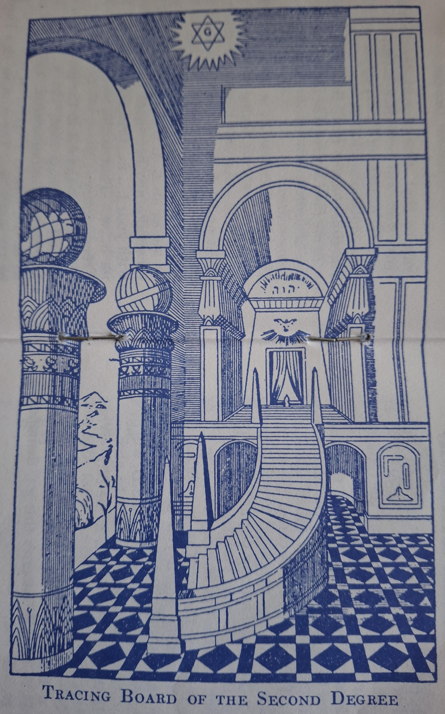

International
Co-Freemasonry
Le Droit Humain
British Federation
Ritual of the Second Degree
(1951 Working revised)
Issued under the sanction of the Supreme
Council of International Co-Freemasonry,
Le Droit Humain
1988
109
Preliminary Ceremony for Candidates for the Second Degree
The Lodge being open in the First Degree, the R.W.M. requests all E.A.s except the C. to cover the Temple and says:
R.W.M.
(to C.) Bro. A.B., do you pledge your honour as a man and your fidelity as a Freemason, that you will steadily persevere through the ceremony of being passed to the degree of F.C.?
C.I do, R.W.M.
R.W.M.Do you likewise pledge yourself under the penalty of your former O... that you will conceal, with the same strict caution as the other
s...tssecrets
in Freemasonry, that which I shall now impart to you?
C. I do, R.W.M.
R.W.M.Then I will entrust you with the
p... g...
and
p... w...PassWord
leading from the First to the Second Degree. The
p... g...
is given,
etc.
This
p... g...
demands a
p... w...PassWord
, which is ... . This
w...word
denotes
...110
, and is usually depicted in our Lodges by an
e... of c...
near to a
f... of W...
. You must be careful to remember this
p... g...
and
p... w...PassWord
as otherwise you will not be able to enter the Lodge working in a higher Degree. Pass, ...
Some responsible Brother is directed by the R.W.M. to cover the Temple with the C. and prepare him. His
l... a... left arm
,
r... b... right breast
and
r... k... right knee
are made
b... bare
and his
l... h... left heel
s...p-s...dslip shoed
. Meanwhile the Lodge is opened in the Second Degree.
Ceremony of Opening the Lodge in the Second Degree
R.W.M.(having previously asked all below the rank of F.C. to cover the Temple, gives one k... which is answered by the W...Wardens
)Brn., assist me to open this Lodge in the Second Degree.
(All rise.)
R.W.M.W.J.W., what is the first care of every F.C.F.?
J.W.To prove the Lodge close tyled, R.W.M.111
R.W.M. Direct that duty to be done.
J.W. Bro. I.G., you will prove that the Lodge is close tyled.
The I.G. gives E.A. k...s, which are answered by the Tyler.
I.G. (with s...nsign
of E.A.)W.J.W., the Lodge is close tyled.
J.W.R.W.M., the Lodge is close tyled.
R.W.M.W.S.W., what is our next care?
S.W.To see that the Brn. stand to order as E.A. F...s, R.W.M.
R.W.M.Brn., to order as E.A. F...s.
The Brn. stand to order with
s..pstep
and
s...nsign
, and then, following the lead of the R.W.M., take
p... of f...
R.W.M.W.J.W., are you a F.C.F.?
J.W.I am, R.W.M.; try me and prove me.
R.W.M.By what instrument in architecture will you be proved?
J.W.By the
s...square
, R.W.M.
R.W.M.What is a
s...square
?
112
J.W.an
a... of n...y d...sangle of 90 degrees
or the
f...h p...t of a c...efourth part of a circle
.
R.W.M.Being yourself acquainted with the proper mode, you will prove the Brn. to be
C...n
by a
s...nsign
, and demonstrate that proof to me by copying their example.
J.W.Brn.,
(all come to order as E.A.s.) it is the R.W.M.'s command that you prove yourself
C...n
by a s...n.
The Brn., taking the second
r... s...p
give the
s...nsign
, and when the J.W. has seen it to be correct he says :
J.W.R.W.M., the Brn. have proved themselves
C...nCraftman
by a
s...nsign
, and in obedience to your command I thus copy their example.
(Gives s...nsign
.)
R.W.M.W.J.W., I acknowledge the correctness of the
s...nsign
.
R.W.M. gives
s...nsign
, and then the Brn., following his lead, take the p... of f...
R.W.M. Brn., before I declare this F.C. Lodge open, let us turn to T.G.G.O.T.U. (Raising his hands) May the rays of His 113truth continue to shed their benign influence upon us, to enlighten us in the paths of Virtue and Science.
All sing
S... m... i... b...So mot it be
The I.P.M. is conducted to the A... as in the First Degree.
R.W.M.Brn. (all come to order, and the R.W.M. raises his hands), in the Name of T.G.G.O.T.U. I declare this Lodge duly open (all finish the s...n, and take the p... of f...) on the s..., for the instruction and improvement of F.C. F.s (gives F.C. k...s, which are answered by the S.W., J.W., I.G. and T.).
At the word "open" the I.P.M. exposes one p... of the c...s, and then returns to the E.
The S.D. on his return arranges the T.B.
All sing
Within our Temple met again
With heart and purpose strong,
114
We'll raise our notes of grateful praise,
With union in our song.
May we be loyal, brave and true,
Staunch F...-C... men all,
Who live by plumb-rule and by square,
Released from passion's thrall.
Around our Altar's sacred shrine,
May love's pure incense rise,
Bearing upon its mystic flame
Our music to the skies.
S... m... i... b...So mot it be
The W.T. and Stages which have been previously concealed must be placed in readiness.
Short Method of Opening the Lodge in the Second Degree
(Not to be used when a Second Degree Ceremony is to be performed)
R.W.M. (having previously asked all below the rank of F.C. to cover the Temple, gives one k..., which is answered by the W...s, rises and says)Principal Officers upstanding; (W...s rise) W.J.W., will you be Off or From?115
J.W. From, R.W.M.
R.W.M.From what?
J.W.From the Degree of E.A. to that of F.C.
R.W.M.Rise, Brn. (All rise).
The I.P.M. is conducted to the A... as in the First Degree.
R.W.M.Brn., (all stand to order as E.A.s) by virtue of the power in me vested as Master, I declare this Lodge open in the Degree of F.C. (gives F.C. k...s, which are answered by the S.W., J.W., I.G., and O.G.). And this shall be your s...n.
The Brn. advancing with the two r... s...ps, stand to order with the s...n and then take the p... of f..., following throughout the lead of R.W.M.
At the word "open" the I.P.M. exposes one p... of the c..s; when the s...n has been given he returns to the E. saluting the R.W.M. in passing -procedure as in the First Degree. The Brn. resume their seats after all the Officers have returned to their places.116
Ceremony of Passing to the Second Degree
When the C. is ready the Tyler sounds an alarm-the E.A. k...s.
I.G. W.J.W., there is an alarm.
J.W.(rises)R.W.M., there is an alarm.
R.W.M.W.J.W., you will enquire who seeks admission.
J.W.Bro. I.G., you will see who seeks admission.
The I.G. goes out, closes the door, examines the preparation of the C., and addresses the Tyler thus.
I.G.Whom have you there?
O.G.Bro. A.B., who has been regularly initiated into Freemasonry and has made such progress as he hopes will entitle him to be passed to the F.C. Degree for which ceremony he comes properly prepared.
I.G.How does he hope to obtain that privilege?117
O.G.By the help of G..., the assistance of the s... and the virtue of a
p... g...
and
p... w...PassWord
I.G.Let him give me the
p... g...
and
p... w...PassWord.
The C, gives them.
I.G.Let the A... wait while I make report to the R.W.M.
The I.G. re-enters the Lodge, closes the door, advances with s...ps and s...n and says :
I.G.R.W.M., there now stands at the door of the Lodge Bro. A.B., who has been regularly initiated into Freemasonry and has made such progress as he hopes will entitle him to be passed to the F.C. Degree, for which ceremony he comes properly prepared.
R.W.M.How does he hope to obtain that privilege?
I.G.By the help of G..., the assistance of the s... and the virtue of a
p... g...
and
p... w...PassWord
.
R.W.M.We acknowledge the propriety of the aid by which he seeks admission. Do you Bro. I.G., vouch that
118he is in possession of the p... g... and
p... w...PassWord?
I.G.I do, R.W.M.
R.W.M. Then let him be admitted in due form. Brother Deacons.
The Deacons go to the W. to receive the C., as in the previous Degree. The I.G. opens the door, meets the C. at the entrance, instructs him to set his f..t on a large s... which is placed on the threshold for that purpose, applies the external angle of another s... to his r... b..., and says:
I.G.Let the angle of the s... pressing your r... b... teach you to act on the s... with all mankind, but more especially with your Brn. in Freemasonry. Enter this Lodge of F.C. F...s in the Name of T.G.G.O.T.U.
The I.G. raises the s... above his own head to show the R.W.M. that he has performed his task. The S.D.* now takes charge of the C., leads him beneath the crossed wands to the left of the S.W., and directs him to salute the R.W.M. as in E.A.
* In some Lodges the J.D. takes charge of the C. until his last work is finished.
119
R.W.M.Let the A... k..., while we invoke the aid of our Superiors on our proceedings.
During the Invocation the Deacons cross their wands over the head of the C. and the Thurifer stands behind him swinging the censer. The Brn. rise and stand with p... of f...
Invocation
R.W.M. (raising his hands)We again invoke your aid, O ye Ministers of T.G.G.O.T.U., and Thine, O Most Worthy and Venerable M... O... W..., who art the H... of all true Freemasons throughout the world;* may this A.., initiated in 120 your presence and having grown in virtue and usefulness under your protection, pass now into fuller knowledge and learn the true Craft of Life based on Virtue and here to be developed by Science into ever-deepening Wisdom.
* Alternative Wording-"G.G.O.T.U., we again invoke your aid and yours, O ye Ministers, of Wisdom. Strength and Beauty"
All sing
S... m... i... b...So mot it be
R.W.M.Let the A... rise.
The Brn. resume their seats.
R.W.M.Let the Candidate perambulate the Lodge.
The S.D. then takes the C. the first perambulation, directing him to salute therein as an E.A. and halting him at the J.W.'s pedestal.
S.D. (to C.)You will advance to the W.J.W. as an E.A.F., with the s...p and s...n, and give him the g... or t... and the w... of an E.A.
J.W.Have you anything to communicate?
C.I have (J.W. rises and receives the g... of an E.A.F.).
J.W.What is this?121
C.the g... or t... of an E.A.F.
J.W.What does this g... demand?
C.A w...
J.W.Give me that w... freely and on this occasion in full.
C.(gives the w...).
J.W. Pass ...
The C. is led to his former position in the W., saluting the S.W. in passing, with the E.A. s...n.
R.W.M.Bro. S. D., let the A... accomplish his last work.
The S.D. leads the C. to the pedestal of the J.W., gives him a mallet and a chisel, instructs him to k...l on his l... k... and give three blows striking the mallet on the chisel applied to the r...h a..r. He then leads the C. to his former position in the W.
S.D.R.W.M., the A...'s last work is finished.
R.W.M. (gives k..., which is answered by the W...s) The Brn, in the N., E., S. and W. will take notice that Bro. A.B., who has been regularly initiated into 122Freemasonry is about to pass in view before them, to show that he is properly prepared to be passed to the F.C. Degree.
The C. is now taken the second perambulation. He salutes therein as an E.A. and at its conclusion halts at the S.W.'s pedestal.
S.D. (to C.)You will advance to the W.S.W. as an E.A.F., with the s...p and s...n, and give him the
p... g...
and
p... w...PassWord
you received from the R.W.M.
As soon as the s...p and s...n are given, the S.D takes C.'s r... h... and with it gives the alarm of the Degree-i.e., the E.A. k...s- on the S.W's right shoulder.
S.W.Whom have you there?
S.D.Bro. A.B. who has been regularly initiated into Freemasonry, and has made such progress as he hopes will entitle him to be passed to the F.C. Degree for which ceremony he comes properly prepared.
S.W.How does he hope to obtain that privilege?
S.D.by the help of G..., the assistance of the s... and the virtue of a
p... g...
and
p... w...PassWord
S.W. (to C.)Are you in possession of the
p... g...
and
p... w...PassWord
?
C.I am
(S,W. rises and receives p... g...
)123
S.W.What is this?
C. (prompted by S.D.)The
p... g...
leading from the First to the Second Degree.
S.W.What does this
p... g...
demand?
C. (prompted by S.D.)A
p... w...PassWord
S.W.Give me that
p... w...PassWord
C.(gives the
p... w...PassWord
).
S.W.What does ... denote?
C....
S.W.How is it usually depicted in our Lodges?
C.By an e... of c... near to a f... of w...
S.W.Pass, ...
The S.D. now places the C. on the S.W.'s left. The S.W. takes the C's hand, rises and says :
S.W.R.W.M., I present to you Bro. A.B., an A... properly prepared to be passed to the F.C. Degree.
R.W.M.W.S.W., your presentation shall receive attention, but in order to attain the higher Degree, five stages must be passed.
124
The Five Stages
R.W.M.Bro. S. D. supply the A.. with a mallet and chisel and let him view the First Stage.
The S.D. conducts the C. to the E. in front of the R.W.M.; he then displays the tablet on which is inscribed THE FIRST STAGE, etc.
The S.D. instructs the C. to read from the tablet in a firm and clear voice.
C.(reading aloud)The Senses.
Touch, by which the embodied Spirit first learns the existence of the world around him.
Hearing, his guide in rendering all harmonious.
Sight, by the aid of which he shapes all to beauty.
Taste, by which he separates the wholesome and the poisonous.
Smell, by which he knows the life-increasing from the life-destroying.
S.D.R.W.M., the First Stage is passed125
A bell is sounded once at this point.
R.W.M.My Bro., up to this point you have been occupied in shaping the rough stone; now in your quality of F.C. you must learn to mould and polish the material so as to give elegance and beauty to the edifice we are raising. The Senses are the windows by which the Spirit becomes aware of his material surroundings. They must be kept clean and bright, else is the vision marred. Only when they are rightly developed and trained can they perform their functions; they should indeed be the servants of our mind and the agents of our faculties. The Initiate should begin his studies with the knowledge of himself and always remember that nothing which touches the welfare of humanity should be a matter of indifference to those who are preparing themselves to become its servants.
R.W.M.Bro. S.D., give the A.. a rule and compasses and show him the Second Stage.126
The D...s take the mallet, chisel and tablet from the C.
The S.D. conducts the C. a few steps further to the S. until he faces the I.P.M. He then gives him a rule (a t... f... i... g...) and compasses. The D...s display the second tablet for the C. to read.
C.(reading aloud)The Arts.
Architecture, the synthesis of beautiful forms.
Sculpture, the detailed shaping of beautiful forms.
Painting, the magic of blended colours.
Music, the resolution of all sounds into harmony.
Poetry, the reason speaking creatively by beauty.
S.D.R.W.M., the Second Stage is passed.
Here the bell is sounded twice.
I.P.M.My Bro., the Arts express the beauty, by which the G.G. manifests Himself in matter. Architecture and
Sculpture aim at perfection in form. 127Painting translates Nature by colour, Music reveals her by sound, showing us the idea behind the object. Poetry synthesises all the arts in the realm of imagination, which is the creative world, and sends down thence the inspiration which evolves them into ever new types of the one beauty. It is the duty of the F.C. to seek the Beautiful in all and to set an example of cultured refinement, simplicity and dignity in his own life, as well as to endeavour to aid in the spreading of true art in his nation.
R.W.M.Bro. S.D., supply the A... with a pl... rule and level, and let him view the Third Stage.
The D..s take the rule, compasses and tablet from the C.
The S.D. conducts the C. to the S.W., gives him a pl... rule and level. The D..s display the third tablet.
C.(reading aloud) Natural Science.
Mathematics, the Divine Reason expressing itself in Number and Causation.
128
Geometry, the symbolism of the Ideas which embody themselves in Form.
Philosophy, the Vision of the One.
Biology, the history of the evolution of the Individual.
Sociology, the building of our individuals into Society.
S.D.R.W.M., the Third Stage is passed.
Here the bell is sounded thrice.
S.W. My Bro., Mathematics and Geometry reveal the creative method and the laws by which crude matter is moulded into forms They are projections from the mind of the G.G.. and all science is but their unfoldment. Philosophy sees the One amid the many and leads man to the unity which lies behind diversity. Biology teaches the right evolution of the particular individual and Sociology that of the larger individual, society. These different branches of Science maybe said to unite in one - the Science of Universal Life - for all is life in nature, and all forms of science 129apply to the manifestations of that One Life.
R.W.M.Bro. S.D., provide the A... with a pencil and book and let him view the Fourth Stage.
The D...s take the rule, level and tablet from the C.
The S.D. conducts the C. to the J.W., gives him a pencil and book. The D...s display the fourth tablet.
C.(reading aloud)Benefactors of Humanity.
Sages, the bringers to men of the Fire from heaven, embodying the Spirit.
Artists, the Priests of the Beautiful, embodying the Emotions.
Scientists, the Kings of the Mind, embodying the Intellect.
Inventors, the Masters of Skill, embodying physical Evolution.
Legislators, the Symbols of Power, embodying Order.
S.D.R.W.M., the Fourth Stage is passed.130
Here the bell is sounded four times.
J.W.My Bro., the bringers of the light of the Divine Wisdom have made life intelligible and death negligible. Artists catch the inspiration of the ideal and are its channels to the lower worlds, Scientists win knowledge and spread it abroad for the instruction of the ignorant. Inventors apply knowledge to the service of humanity. Legislators translate universal laws into rules adapted to the particular. All these benefactors of humanity have helped to point out to it the virtues to be practised and the goal to be attained. Let us offer them our homage and follow their steps. As a F.C. you must emulate the type of benefactor which is most congenial to you.
R.W.M.Bro. S.D., let the A... have his hands free as he views the Fifth Stage.
The D...s take the pencil, book and tablet from the C.
The S.D. conducts the C. to the left of the 131S.W. The D...s display the fifth tablet.
C. (reading aloud) Service. The highest ideal of life is to serve.
S.D.R.W.M., the Fifth Stage is passed.
Here the bell is sounded five times.
R.W.M.My Bro., he that is greatest is he that serveth best. When mutual service becomes the recognised law of human life, each man will be a steward, not an owner, and will hold all his possessions -spiritual, intellectual, moral, physical, as the common wealth, which he joyfully administers for the common good. Only when this is reached will the One Will be done below as it done above, by those who know that perfect freedom is only found in perfect service. At this stage your hands are left free, but nevertheless you keep your a...n, your emblem of service; let us serve according to our means and our strength, whether by doing so we obtain ridicule or praise.
The S.D. removes the tablet.132
R.W.M.W.S.W., you will direct the S.D. to instruct the A... to advance to the E. by the proper s...ps.
S.W.Bro. S.D., it is the R.W.M.'s command that you instruct the A... to advance to the E. by the proper s...ps.
The S.D. conducts the C. to the N. side of the Lodge approximately opposite to the J.W., and facing S.
S.D.(to C.)The method of advancing to the E. in this Degree is by f... s...ps, emblematical of ascending a w..g s...e, etc.......... I shall now go through them for your instruction, after which you will copy my example.
The S.D. instructs the C. to stand with the l... f... pointing forward and the r... h...l square with the h...l of the l... f... . The f...t s...p is taken with the l... f... by raising it about one foot in the air; etc. After the last s...p the C. stands with his h...s square as before. The h...s are not brought to the square between the several s...ps. This last s...p should bring the C. to the A... without any further movement of the f...
The R.W.M. may place the I.P.M. in the Chair. He descends to the A... The D.C., Thurifer and s...d-bearers act as in the preceding Degree.
R.W.M. (to C.)As the s...ts of each Degree are to be kept separate and distinct from each other, another O... will now be required of you. Are you willing to take it?
C.I am, R.W.M.
R.W.M.Then you will k... on your r... k..., keeping your l... k... in the f... of a s...; place your r... h... on the V.S.L., while your l... e...w is supported in the angle of the s..., (The arm must be supported by the J.D. in the position of the H...g s...n of a F.C. If there be more than one C. a Bro. may be appointed to support the s...s); state your several names at length and say after me:
Here the Brn. rise.134
Obligation
R.W.M.I, A.B., in the presence of T.G.G.O.T.U. and in the body of this Chartered and Right Worshipful Lodge of F.C.F.s, regularly assembled and properly dedicated, of my own free will and accord, do hereby and hereon most solemnly and sincerely swear that I will always hele, conceal, and never wilfully reveal, any of the s...ts or mysteries of or belonging to the F.C. Degree to him who is but an E.A., any more than I would any of them to the uninitiated of the outer world who are not Freemasons.
I further pledge myself to act as a true and faithful C..n, acknowledge s...ns, obey summonses and maintain the principles inculcated in the First Degree.
These several points I solemnly swear to observe without evasion, equivocation or mental reservation of any kind, under no less a penalty, on the violation of any them, than that of having, etc. or the more effective punishment of being 135branded as a wilfully perjured individual void of all moral worth.
So help me, G.G.O.T.U., and keep me steadfast in my great and solemn O..., being that of a F.C.F.
The S.D. removes the s... from the e...w of the C. who lowers his hands.
All sing softly thrice
May the VOW be kept!
The accompanying ritual actions both here and in the act of admission are exactly the same as in the earlier Degree.
R.W.M. (to C.)In the presence of the Deity Whose Name you have invoked, and of the F.C. F.s here assembled, you will now recognise the solemnity of your O... and your submission to our discipline by touching twice with your lips the V.S.L.
R.W.M. (holding the f... s...d aloft in right hand)To the Glory of T.G.G.O.T.U (lowering s...d to "carry") and to the perfection of humanity, (raising the g... in left hand) in the name and under the auspices of the Supreme Council of International 136Co-Freemasonry Le Droit Humain (crossing g... over s...d) by virtue of the power in me vested, (placing s...d on h... of C.) I create (sounds F.C. k..s with g... on the b...de of s...d and then removes s...d to l... s...) receive (repeats k...s, with s...d on l... s... and then removes it to r... s...) and constitute you (repeats k.. s, with s...d on r... s...) a F.C.F. (again places s...d on h..., as these last words are spoken.)
The F.C. k...s are sounded on a bell immediately after the above words; if there is more than one N. they are sounded for each. The sound should be allowed to die away naturally. A few chords of music should be played here, as in the previous Degree.
R.W.M.Your progress in Freemasonry is marked by the position of the s... and c... When you were made an E.A. both p...s of the c...s were concealed; in this Degree one is disclosed, implying that a new ray of light is now shed upon your life, which will enable you to discover the 137way to that wider knowledge to which I trust you will hereafter attain.
R.W.M. (taking the N, by the r... h...)Rise duly o...d F.C.F.
The Brn. chant Hail, Bro.; Bro., hail!
as in the First Degree. The D.C., Thurifer and s...d-bearers resume their places and all are seated.
The S.D. places the N, in the N.E., and the R.W.M. stands facing him.
R.W.M.As you have now taken the great and solemn O... of a F.C.F., I shall proceed to entrust you with the s...ts of this Degree. You will, therefore, advance to me as an E.A. (N. advances). You will now take another short p... towards me with your l... f.., bringing the r... h... into its h...w. That is the second r... s...p in Freemasonry.
It is with the f..t in the second r... s...p position of the that the s...ts of this Degree are communicated. They consist, as in the former Degree, of a s...n, a g... or t... and a w... The s...n in this Degree is threefold. The first part is given thus ..., and is called the s...n of f..., or of s...y. It is emblematical of shielding the repository of our s...ts from the attacks of the insidious. The second part of the s...n is given thus ..., and is called the h...g s...n or s...n of p...e sometimes called the s...n of p...r. The third part is called the p... s...n, and is commonly supposed to allude to the p...y, attached among our ancient Operative Brn., to any violation of the O..., which was that of having, etc. The g... or t... is given thus ... The g... demands a w... regarding which you are to observe the same strict caution as in the former Degree. The word is ... . The S.D. will now dictate the answers you are to give.
R.W.M. (gives the g... to the N.)What is this?
N.(prompted by S.D.)The g... or t... of a F.C.F.
R.W.M.What does this g... demand?
N.A w...
R.W.M.Give me that w...141
N.In this Degree, as in the former, I was taught to be cautious, but with you, a Bro., I will l... or h... it.
R.W.M.I commend you for your caution; l... it and begin.
N. (shares the w...).
R.W.M.This w... is derived from the r... h... p... at the p..y e...e of K... S...'s T... so named after ..., the assistant H... P... who officiated at its dedication. The import of the w... is ..., and when conjoined with the w... of the First Degree, signifies ... .
R.W.M. (taking the N. by r... h... and passing him to the S., says)Pass,..., to the W.W...s.
The R.W.M. returns to the Chair.
Examination by the WDs
The S.D. takes the N. to the pedestal of the J.W. . The S.D. prompts the N. in his answers.
S.D.W.J.W., I present to you Bro. A.B. on his being passed to the Degree of F.C.142
J.W.Bro. A. B., you will advance to me as a F.C.F.
(The N. takes the two s...ps).
J.W.Do you bring anything with you?
N.I do (gives the s...n).
J.W.What is that?
N.The s...n of a F.C.F.
J.W.Have you anything to communicate?
N.I have (J.W. rises and receives the g...).
J.W.What is this!
N.The g... or t... of a F.C.F.
J.W.What does this g... demand?
N.A w...
J.W.Give me that w...
N.In this Degree, as in the former, I was taught to be cautious, but with you, a Bro., I will l... or h... it.
J.W.I commend you for your caution; l... it and begin.
N.(shares the w...).
J.W.Pass ..., to the W.S.W.143
The S.D. takes the N. to the S. W.'s pedestal.
The S.D. prompts the N. as before.
S.D.W.S.W., I present to you Bro. A.B., on his being passed to the Degree of F.C.
S.W.Bro. A.B., you will advance to me as a F.C.F.
(The N. takes the two s...ps).
S.W.What is that?
N.The second r... s...p in Freemasonry.
S.W.Do you bring anything with you?
N.I do (gives the s...n of f...).
S.W.What is that?
N.The s...n of f..., or of secrecy, emblematically to shield the repository of our s...ts from the attacks of the insidious.
S.W.Do you bring anything else?
N.I do (gives the h... s...n).
S.W.What is that?
N.The h... s...n or s...n of p...e.
S.W.Do you bring anything else?
N. I do (gives the p... s...n).
S.W.What is that?
N. The p... s...n of a F.C.F.
S.W.To what is it supposed to allude?
N.To the p..y attached among our ancient Operative Brn., to any violation of the O..., which was that of having, etc.
S.W.Have you anything to communicate?
N.I have (S.W. rises and receives the g...).
S.W.What is this?
N.The g... or t... of a F.C.F.
S.W.What does this g... demand?
N.A w...
S.W.Give me that w...
N.In this Degree, as in the former, I was taught to be cautious, but with a you, Bro., I will l... or h... it.
S.W.I commend you for your caution; h... it and begin.
N.(shares the w...).
S.W.Whence is this w... derived?
N.From the r... h... p... at the p..y e...e of K. S...'s T..., so named after ..., the assistant H... P... who officiated at its dedication.
S.W.The import of the w...?
N....
S.W.And when conjoined with that of the First Degree?
N....
S.W.Pass,
The Investiture
The S.D. places the N. on the S.W.'s left. The S.W. takes the N.'s hand, rises and says :
S.W.R.W.M., I present to you Bro. A.B., on his being passed to the Degree of F.C., for some further mark of your favour.
R.W.M.W.S.W., I delegate to you the duty of investing out Bro. with the distinguishing Badge of a F.C.F.
The investiture takes place as in the preceding Degree, the flap of the badge pointing upwards.
S.W.(to the N.) Bro. A.B., by command of the R.W.M. I invest you with the distinguishing badge of a F.C. F., to mark the progress you have made in the Science.
The S.W. gently lowers the flap of the badge, salutes and returns to his pedestal.
All sing
With your emblem now invested,
Still proceed as you began;
Prove yourself, however tested,
Both a Craftsman and a man.
Let your life be free from evil,
Never by temptation fall;
Tried by plumb-rule, square or level,
Let your actions fit them all.
R.W.M. (to the N., who faces E.)Bro. A.B., the badge with which you have just been invested points out to you that, as a F.C.F., you are expected to make the hidden mysteries and meaning of our Science your future study, that you may be the better enabled to discharge your duties as a Freemason and estimate more truly the wonderful manifestations of T.G.G.O.T.U.
R.W.M. Bro. S. D., you will place our Bro. in the S.E. part of the Lodge, at the corner of the mosaic pavement.
R.W.M.(or a P.M.)Bro. A.B., when you were made an E.A. you were placed in the N.E. part of the Lodge to show that you were newly admitted. Freemasonry being a progressive science, you are now placed in the S. E. to mark the progress you have made. You now stand, to all external appearance, a just and upright F.C.F., and I earnestly recommend you ever to continue and act as such. I am led to hope that the import of the Charge delivered to you in the First Degree neither has been, nor ever will be, effaced from your memory. I shall, therefore, content myself with observing that as you have had an opportunity of making yourself acquainted in the First Degree with the principles of Moral Truth and Virtue, you are now in this Degree 148required to extend your researches to the more hidden paths of Nature and Science.
Working Tools
R.W.M.W.S.W., you will explain the Working Tools of this Degree.
The S.D. places the N. in front of the S.W.'s pedestal.
S.W.Bro. A.B., by command of the R.W.M. I present to you the working tools of a F.C.F. They are the S..., the L... and the P... R... The S... is used by Operative Masons to try, and to adjust, all rectangular corners of buildings and to assist in bringing rude matter into due form. The L... is to lay levels and prove horizontals. And the P... R... is to try, and to adjust all uprights while fixing them on their proper bases.
But as we are not Operative, but Free and Accepted, or Speculative Masons, we apply these tools as symbols and invest them with a moral significance.149
Thus the S... teaches us to regulate our actions by the Masonic line and rule and to correct and harmonise our conduct.
The L... demonstrates that we are all sprung from the same stock, are partakers of the same nature and sharers of the same hope and that, although distinctions among men are highly necessary to preserve due subordination and to reward merit and ability, yet no eminence of station should cause us to forget that we are Brn.
The infallible P... R... teaches us to walk uprightly in our several stations; to hold the scales of justice with an equal poise, so that neither passion nor prejudice cause us to deviate from the strict path of virtue, and thus to observe a due medium, the golden mean in all things.
Hence, the S... teaches us the morality, the L... equality, and the P... R..., justness and uprightness of life and actions; so that by s... conduct, l... steps and upright intentions, we may hope to 150ascend to a higher realisation of that Immortal Principle whence all goodness emanates.
All sing.
The integrity of the upright shall guide him: the righteousness of the perfect shall direct his way.
Righteousness tendeth to life: and to him that soweth it there shall be a sure reward.
R.W.M.You are now at liberty to retire in order to restore yourself to your p...l c...t, and on your return your attention will be called to a Charge.
The S.D. instructs the N. to salute in the usual manner on covering and re-entering the Temple.
A Charge in the Second Degree
Usually omitted.
I.P.M.Now that you have duly been passed to the Second Degree we congratulate you 151on your preferment. It is unnecessary to recapitulate the duties which as a Mason you are bound to discharge, or to enlarge on the necessity of a strict adherence to them, as your own experience must have established their value. In your new character it is expected that you will not only conform to the principles of the Order, but steadily persevere in the practice of every virtue. The study of the liberal arts, which tend so effectually to polish and adorn the mind, is earnestly recommended to your consideration, especially the science of geometry, which is established as the basis of our Art. You are to preserve our ancient usages and customs sacred and inviolable, and induce others by your example to hold them in veneration. The laws and regulations of the Order you are strenuously to support and maintain. You are not to palliate or aggravate the offences of your Brn.; but in the decision of every trespass against our rules, judge with candour, admonish 152with friendship and reprehend with mercy. As a C.n in our private assemblies you may offer your opinions on such subjects as are introduced in the lecture, under the superintendence of an experienced Master who will guard the Landmarks against encroachment. By this privilege you may improve your intellectual powers, qualify yourself to become a useful member of society, and, like a skilful Bro., strive to excel in what is good and great. You are duly to honour and obey all regular s...s and summonses, given and received. You are to encourage industry and reward merit, supply the wants and relieve the necessities of the Brn. to the utmost of your power and ability, and on no account to wrong them or see them wronged, but timely to apprise them of approaching danger, and to view their interests as inseparable from your own. Such is the nature of your engagements as a F.C.F., and these duties you are bound by the most sacred ties to observe.153
Before the Mystic Charge is given the following verse may be sung...
Brother, faithful and deserving,
Now the second rank you fill;
Never from your purpose swerving,
Press straight onward higher still.
Thus from rank to rank ascending
Mounts the Mason's path of love;
Bright its earthly course, and ending
In the glorious Lodge above.
Mystic Charge
Given by the I.P.M. or other P.M.
I.P.M.NAs on your Initiation you were taught to regard the ceremony through which you had passed in a clearer and fuller light than that in which many Freemasons regard it, so now again must you realise that among us, the F.C. Degree carries with it a special teaching, and imposes upon your life certain responsibilities. This Degree represents those stages in the true Mysteries during which the154Initiate is called to improve and polish his own nature, to develop his intellectual, artistic and psychic faculties, as during the stage of the E.A.F. he should specially cultivate his moral capacities. Moreover, he has a duty to the world in general as to his Brn. in Freemasonry in particular.
For the development of your intellectual and artistic powers, you, as a F.C., should consecrate some part of the T...-f... I... G... to the study of philosophy, science or art, choosing your subject according to the bent of your mind, and the type of your temperament. For the unfolding of your psychic capacities you should daily retire for a brief space from the outer world, and securing yourself against interruption, you should meditate steadily on the Beautiful, the True or the Good, striving to see with your inner vision the ideal you picture by your imagination. Thus may you win some of the hidden secrets of Nature and may communicate them, as you see fitting, to your Lodge working in the Second Degree.
In the world you should be an example of serious and harmonious living, endeavouring to lead a nobly simple life, dignified and beautiful, a silent protest against the enfeebling luxury and the ugly ostentation of ordinary modern society. In your home, in your dress, in your gestures, in your speech, you should seek the congruous, the graceful, the delicate, the beautiful, remembering that true beauty is not dependent on wealth nor on social position, but on measured harmony, on congruity, on balance, on dignity, on the subordination of details to the whole, of the form to the idea. Study Nature and learn from her the harmonies of life, of colour and of form. Avoid all that is meretricious, showy and vulgar. Seek in art the ideal, and help the form to express the truth it veils, remembering that the ugly and distorted are Nature's failures, which she ever seeks to transmute.
See to it, 8S a F.C., that the world is the better for your smoothing and polishing of the crude stones, and that the Temple we are raising for humanity becomes the fairer for your inclusion among C...n.
All sing
Stand forth, O worthy Craftsman,
In order's fair array;
Stand forth with strains of gladness
On this your happy day.
Praise we the Great Creator,
Our hearts and voices raise,
His gates with songs to enter,
And tread His courts with praise.
Stand forth, O worthy Craftsman,
Uphold the plumb-line fair;
We meet upon the level
And part upon the square;
And thus by upright living
We strive towards the Light;
May this our humble service
Be pleasing in His sight.
S... m... i... b...So mot it be
Explanation of the Tracing Board of the Second Degree
138-139
I.P.M.At the building of K... S...'s T..., symbolising the t... of humanity that we are raising, a vast number of artificers were employed, consisting of E.A.s and F.C..n. The E.A.s received their wages in corn, wine and oil, the fruit of the earth on which humanity dwells. They symbolise the natural direct rewards in kind of well-directed human labour. The F.C...n were paid in specie, symbolising the rewards of toil, not directly remunerated by its results, and went to receive their wages in the m... C... of K... S...'s T... They arrived there by way of a p... at the entrance of which stood two great p... That on the left was called ..., which denotes In..., that on the right was called ..., which denotes To ...; the two conjoined signify ...
Every Freemasons' Lodge has or ought to have, two pillars one on each side of the western entrance. These represent the p... at the e...e of the T... They were formed hollow, to receive the archives of Freemasonry. The superintendent of the casting of them was H..., the son of a widow of Naphtali. They were adorned with two capitals encircled with net-work, lily-work and rows of pomegranates. Net-work, from the connection of its meshes, denotes unity; lily-work from its whiteness, peace; pomegranates, from the exuberance of their seed, plenty. They were further adorned with two spherical balls on which were delineated maps of the celestial and terrestrial globes, which denote the universality of Freemasonry.
After passing these two great p... the F.C.n arrived at the foot of a winding staircase, where their ascent was opposed by the ancient J.W., who demanded of our Brn. the
p... w...PassWord
of a F.C.. This is ... and is depicted in a F.C., Lodge by ..., ... The word is taken from a story of battle in the Hebrew Scriptures, and, as it was then a test word to distinguish friend from foe, K...S... caused it to be adopted as a
p... w...PassWord
in a F.C. Lodge, to prevent any unqualified person from ascending the winding staircase that led to the m... C.. of K... S...'s T...
Our ancient Brn. then communicated the p... g... to the J.W., who, having received these convincing proofs, said: "Pass,..."
They then passed up the winding staircase, consisting of three flights of steps, the first numbering three, the second five and the third seven. Three rule a Lodge; five hold a Lodge; seven or more make it perfect. The three that rule a Lodge are the R.W.M. and his two W...s. The five that hold a Lodge are the R.W.M., the W..s, and two F.C...n. The seven that make it perfect are two E.A...s or other M...s added to the former number.
Three rule a Lodge because there were but, three G...M...s, who bore sway at the building of the first T... at Jerusalem-S...,
160K... of I.., H..., K... of T..., and H... A... Five hold a lodge, in allusion to the five noble orders of architecture-the Tuscan, Doric, Ionic, Corinthian, and Composite -and to the five senses, the avenues through which we acquire knowledge. Seven or more make a perfect Lodge, because K... S... was seven years and upwards in building, completing and dedicating the T... at Jerusalem to God's service; they have likewise a further allusion to the seven liberal arts and sciences - grammar, rhetoric, logic, arithmetic, geometry, music and astronomy.
When our ancient Brn. had gained the summit of the staircase, they arrived at the door of the m... c..., which they found properly tyled by the ancient S.W., who demanded of them the s...n, t... and w... of a F.C. After they had given convincing proofs that they were F.C...n, he said: "Pass, ...". They then passed into the m... c.., to receive their wages, which they did without scruple and without diffidence.
161Without scruple, knowing that they were entitled to receive them; and without diffidence, from the strict reliance they placed in the integrity of their employers in those days. When they were in the m... c... their attention was particularly arrested by certain Hebrew characters, which are now depicted in a F.C. Lodge by the letter G, which refers to T.G.G.O.T.U., who has planned the universe by numbers.
Examination of Candidates for the Third Degree
F.C. F...s before being raised to the Third Degree are examined with regard to their proficiency in the Second Degree, just as they were previously examined with regard, to the First Degree.
The Lodge being open in the Second Degree, the R.W.M. proceeds as follows:162
Questions
These must be satisfactorily answered from memory.
R.W.M.Brn., Bro. A.B. is a Candidate to be raised to the Sublime Degree of M.M., but it is first necessary that he should give proofs of his proficiency in the Second Degree. I shall therefore proceed to ask him the usual questions.
R.W.M.Bro. S.D., you will advance the F.C. to my pedestal.
R.W.M.How were you prepared to be passed to the Second Degree?
C.In a manner somewhat similar to that in the former, save that in this Degree I was not d... of m..s or v...s nor h... w... I had my l... a..., r... b... and r... k... made b... and my l... h... s...p-s...d.
R.W.M.On what were you admitted?
C.On the s...
R.W.M.What is a s...?
C.An a... of n...y d...s or the f...h p...t of a c...e.163
R.W.M.What are the peculiar objects of research in this Degree?
C.The hidden mysteries of Nature and Science.
R.W.M.As it is the hope of reward that sweetens labour, where did our ancient Brn. go to receive their wages?
C.To the m... c... of K... S...'s T... .
R.W.M.How did they receive them?
C.Without scruple and without diffidence.
R.W.M.Why in this peculiar manner?
C.Without scruple, knowing they were entitled to receive them; and without diffidence, from the strict reliance they placed in the integrity of their employers.
R.W.M.What were the names of the two great p... which were placed at the p...y e...e of K... S...'s T...?
C.That on the ... was called ..., and that, on the ... ...
R.W.M.What are their separate and conjoint significations?164
C.The former denotes ...; the latter ...; and when conjoined ... .
R.W.M. Brn., these are the usual questions. If any Bro. desires me to put others, let him speak.
Should any Bro. desire to question the C. further, he asks the R.W.M. whether it is in order to ask ... etc.
The R.W.M., if he considers the question suitable, addresses it to the C.
S.W. (if no Bro. puts a question)The c...s are s..., R.W.M.
The R.W.M. then causes all F.C.s to cover the Temple. The C. can be raised at this or a subsequent meeting.165
Ceremony of Closing the Lodge in the Second Degree
R.W.M. (gives one k.., which is answered by the W...s, and says)Brn., assist me to close this F.C. Lodge.
(All rise.)
R.W.M.W.J.W., what is the constant care of every F.C.F.?
J.W.To prove the Lodge close tyled, R.W.M.
R.W.M.Direct that duty to be done.
J.W.Bro. I.G., you will prove that the Lodge is close tyled.
The I.G. gives F.C. k...s, which are answered by the O.G.
I.G.W.J.W., the Lodge is close tyled.
J.W.R.W.M., the Lodge is close tyled.
R.W.M.W.S.W., what is our next care?
S.W.To see that the Brn. stand to order as F.C. F...s, R.W.M.166
R.W.M. Brn., to order as F.C. F...s.
The Brn. taking two r... s...ps stand to order with s...n, and do not in this case drop to p... of f...
R.W.M.W.J.W., in this position what have you discovered?
J.W.A s...d S...l, R.W.M.
R.W.M.W.S.W., where is it situated?
S.W.In then c... of the building, R.W.M.
R.W.M.W.J.W., to whom does it allude?
J.W.To T.G.G.O.T.U., R.W.M. (All drop to p... of f...).
R.W.M.Then, Brn., let us remember that, as He is the c... of His Universe, so is His reproduction of Himself the c... of ourselves, the Inner Ruler immortal, and that our whole nature must be conformed to That whereby it lives.
All sing
S... m... i... b...So mot it be
Now our labours closing
And from toil reposing,
Now may God direct us
And from harm protect us.
S... m... i... b...So mot it be
The I.P.M. is conducted by the D.C. as in the previous Degree.
R.W.M.W.S.W., the labours of this Degree being ended, you have my command to close this F.C. Lodge (gives F.C. k...s).
S.W.Brn., (all come to order, and the S.W. raises his hands) in the Name of T.G.G.O.T.U., (joining his hands in front of his forehead palm to palm and bowing) and by command of the R.W.M. (standing upright with g... in hand) I close (all finish the s...n, dropping the hand to the side and disengaging the f..t from the position of order) this F.C. Lodge (gives F.C. k...s).
J.W.And it is closed accordingly (gives F.C. k...s, which are answered by the I.G. and O.G.).168
R.W.M.And I declare the Lodge resumed in the Degree of E.A. (gives E.A. k...s, which are answered by the S.W., J.W., I.G. and O.G.). And this shall be your s..n.(R.W.M. gives E.A.s.n, followed by Brn.)
As the S.W. utters the word "close" the I.P.M disarranges the s... and c...s, and at the word "resumed" he adjusts them to the E.A. Degree; when the s...n has been given he returns to the E., and the S.D. arranges the T... B...
The Brn. resume their seats, and E.A.F...s are re-admitted.
Short Method of Closing the Lodge in the Second Degree
(This method should not be used after a Ceremony of Passing).
R.W.M. (gives one k..., which is answered by the W...s, rises, and says): Principal Officers upstanding (W...S rise): W.J.W., will you be Off or From?
J.W.Off, R.W.M.
R.W.M.Off what?169
J.W. Off the Degree of F.C. to that of E.A.
R.W.M.Rise, Brn. (all rise).
The I.P.M. is conducted by the D.C., as in the previous Degree.
R.W.M.Brn. (all come to order) by virtue of the power in me vested as Master, I close (all finish the s...n, dropping the hand to the side and disengaging the f...t from the position of order) this F.C Lodge (gives F.C. k...s, which are answered by the S.W., J.W., I.G. and O.G.).
R.W.M.And I declare the Lodge resumed in the Degree of E.A. (gives E.A. k...s, which are answered as before). And this shall be your s...n (R.W.M. gives the E.A. s...n, followed by Brn.).
At the word "close" the I.P.M. disarranges the s... and c...s and at the word "resumed" he adjusts them to the E.A. Degree; when the s...n has been given he returns to the E., and S.D. arranges the T...B...
The Brn. resume their seats, and E.A. F...s are re-admitted.